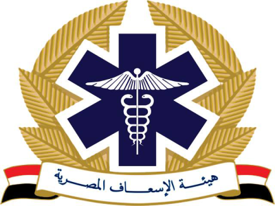

<nav class="navbar bg-body-tertiary  ">
  <div class="container-fluid  ">
 
    <div class="d-flex gap-2 res  "> 
  
      <div class="button-item  radiousicon d-flex justify-content-center align-items-center px-2">
        <a routerLink="/about" ><i class="fas fa-bars fs-2xl px-5 text-white  "></i></a>
      </div>
        <div class="button-item  radiousicon d-flex justify-content-center align-items-center px-2">
      <i class="fas fa-sign-in-alt icon text-white fs-2xl"></i>
    </div>
    <div class="button-item radiousicon d-flex justify-content-center align-items-center px-2">
      <a routerLink="/home" >   <i class="fas fa-globe icon text-white fs-2xl "></i></a>
  
  </div>

      <div class="inquiries-button background boxshadow " >
        <span class="px-1">تتبع طلب</span>
        <i class="fas fa-clock icon text-black fs-xl "></i>
      </div>
      <div class="inquiries-button boxshadow">
        <i class="fas fa-comment-alt icon text-black fs-xl"></i>
        <span>للإستفسارات والشكاوى</span>
     
    </div>
  </div>
  <div class="d-flex gap-2 res2">
    <div class="textf fw-bold mt-1 px-2 ">
      <span class="d-flex justify-content-center align-items-center  ">هيئة الإسعاف المصرية</span>
      <p class="d-flex justify-content-center  ">Egyptian Ambulance Organization</p>
    </div>
    
  </div>
  </div>
    
 
</nav>
